跨链流程
Simplechain是一个主子链架构的混合公链，不同链之间的资产跨平台越迁就会涉及到跨链操作。下面是跨链的详细流程：
下载ChainBox
根据自己移动设备系统下载对应的ChainBox安装包，注册钱包后保管好自己的私钥。找到钱包地址，复制钱包地址。如下图：
领取测试资产
打开水龙头，水龙头地址：测试网水龙头
将上一步复制的钱包地址输入到水龙头中，就可以领取测试币。如下图：
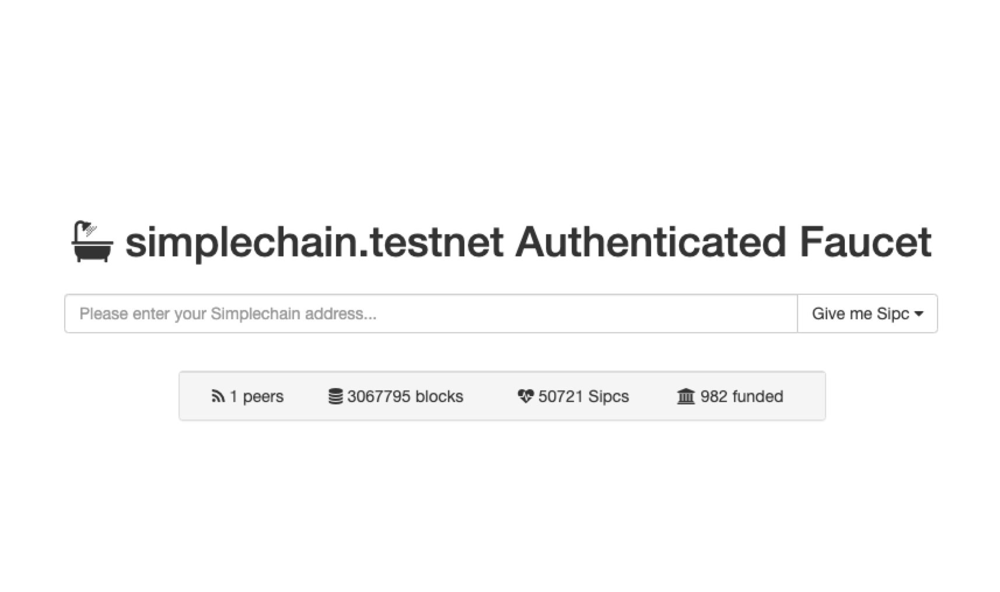
进行跨链交易
跨链入口
打开钱包进入首页，钱包资产中显示该钱包在上链生态中的所有币及其折价（如下图）

点击某一项钱包资产（TEST）进入主链交易页面（如下图）
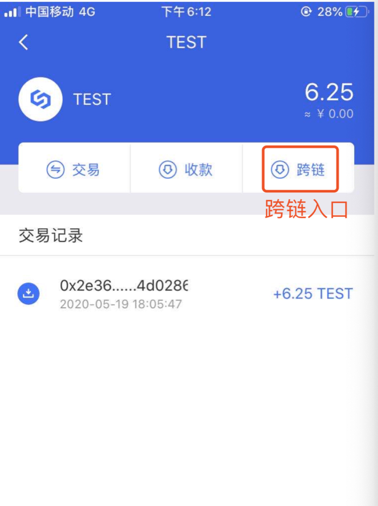
点击上图中的“跨链”按钮进入交易对选择界面（如下图），这里暂时只提供一个交易对。
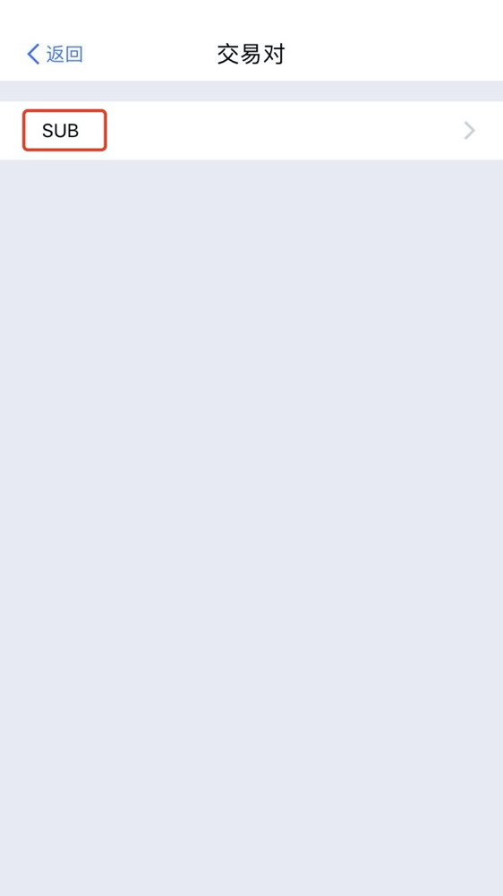
点击SUB进入跨链交易市场。下图中跨链列表显示主子链间的订单，红色单价的纪录为主链发往子链的订单，绿色单价的记录为子链发往主链的订单。跨链列表按单价由高到低排列，更多的记录可点击Tab页面可接单和发单列表查询展示。当前委托页面显示的是当前账号参与的跨链交易订单，点击全部可以显示所有委托订单和历史跨链交易记录。
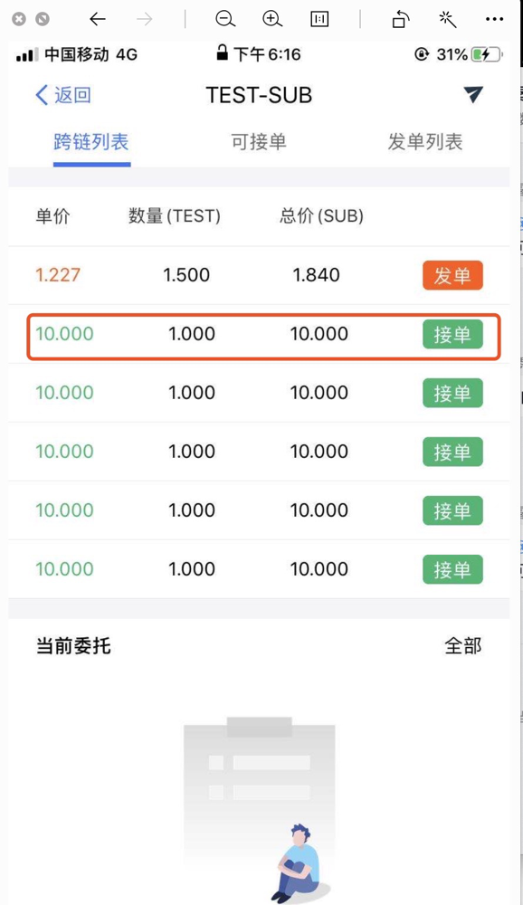
接单：
点击上图红色线框中的接单即可成交一笔跨链交易。该笔交易的意思是您卖出1个TEST，获得10个SUB，单价为0.1SUB/TEST。参见下图
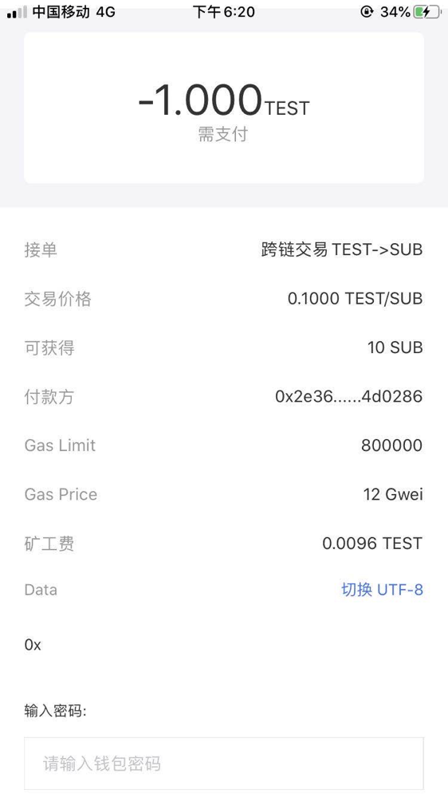
输入钱包密码后点“确认”发出一笔链上交易，待交易确认后即可成交（约6分钟）。 点击“全部”—>“历史记录”可以看见刚刚成交的跨链交易记录，如下图：
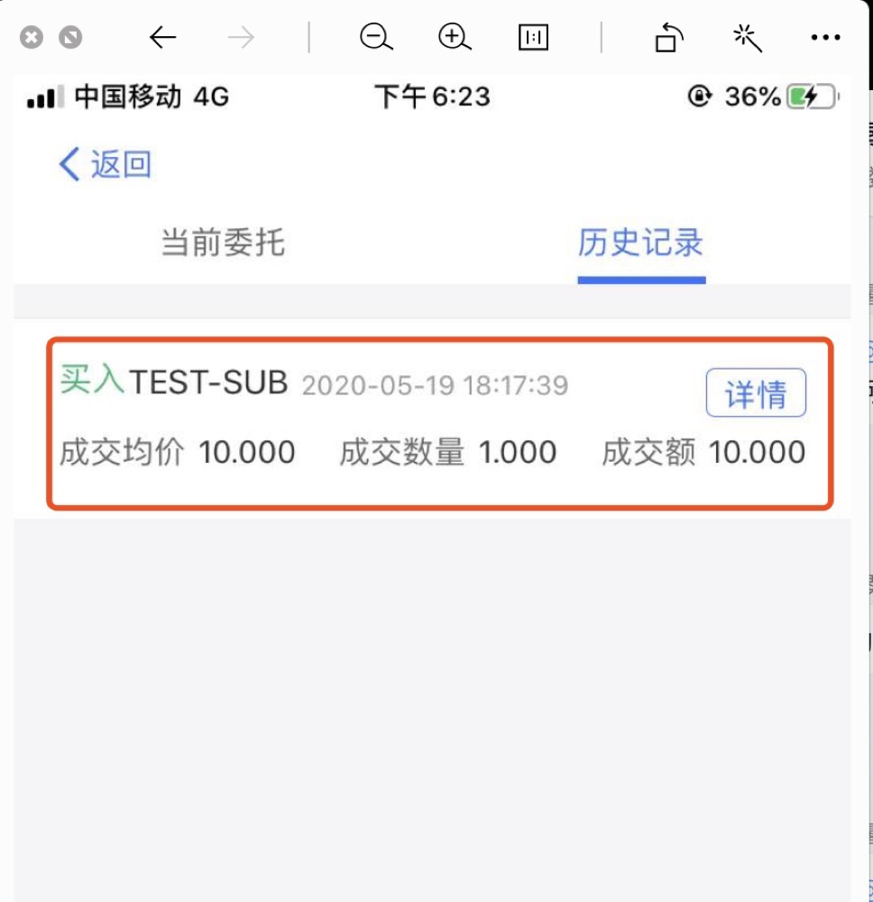
浏览器查看交易详情
查看跨链记录：
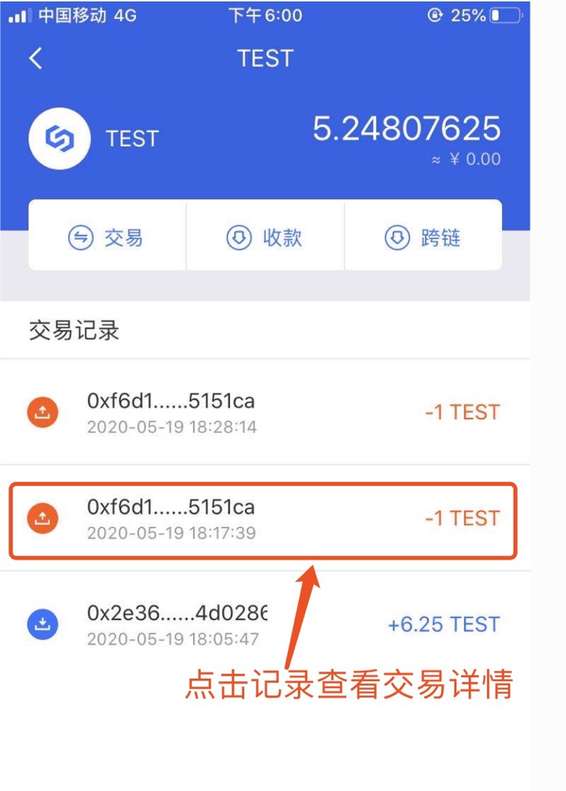
查看交易详情：
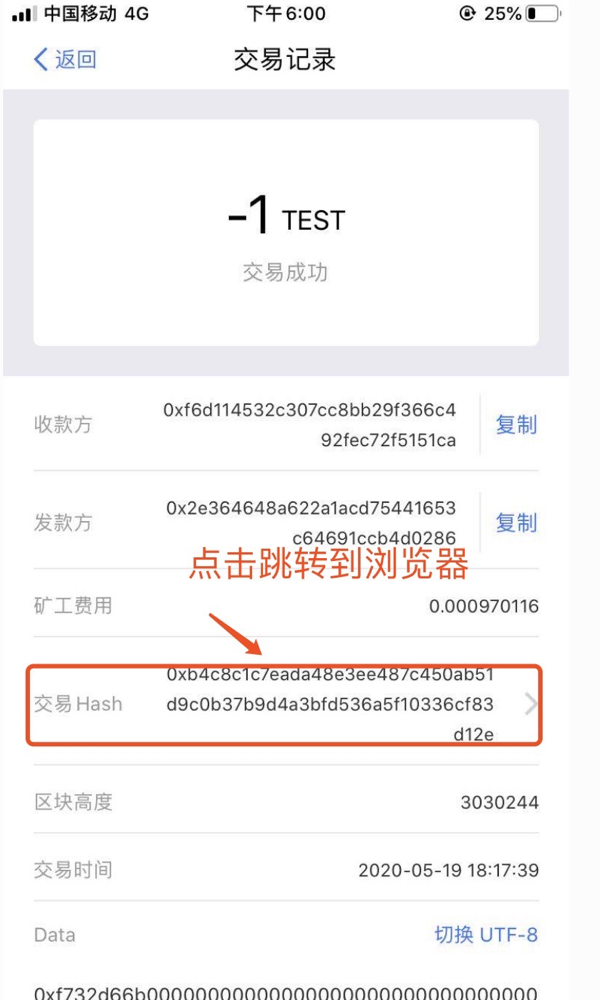
浏览器查看详情：
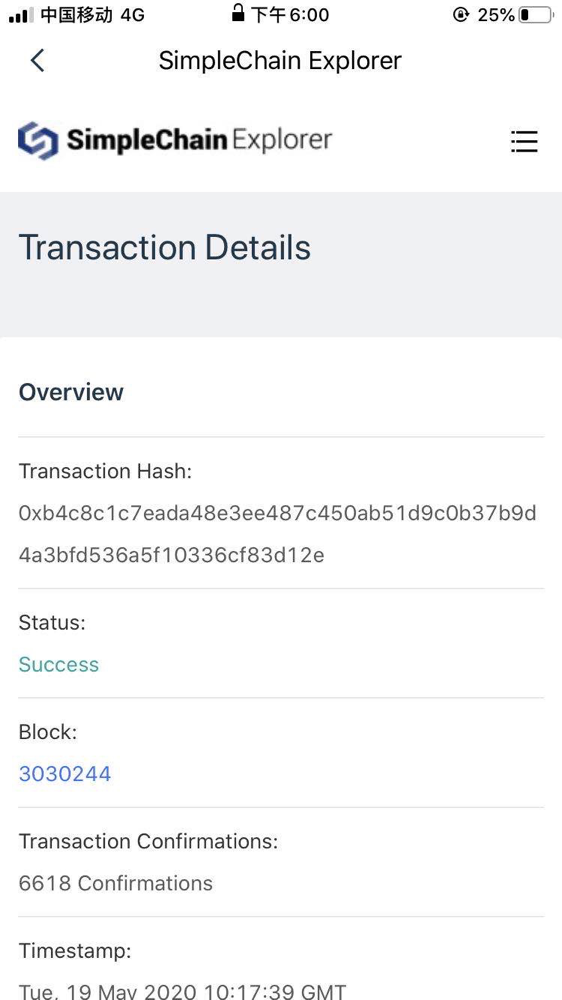
回到钱包首页发现子链币增长了10 SUB，手续费0.001 TEST，远小于普通交易所的0.2%的手续费率 。
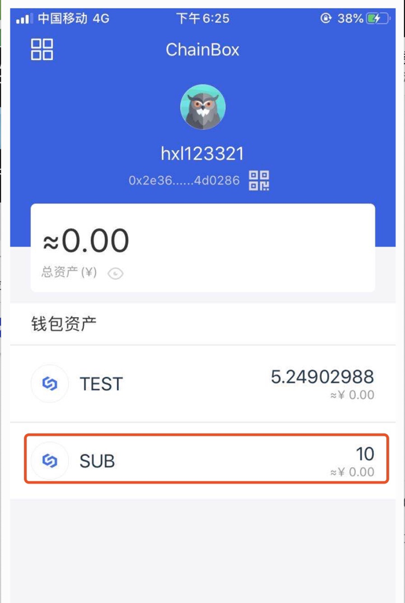
发单
点击跨链交易市场中的“发单”按钮，进入发单流程。
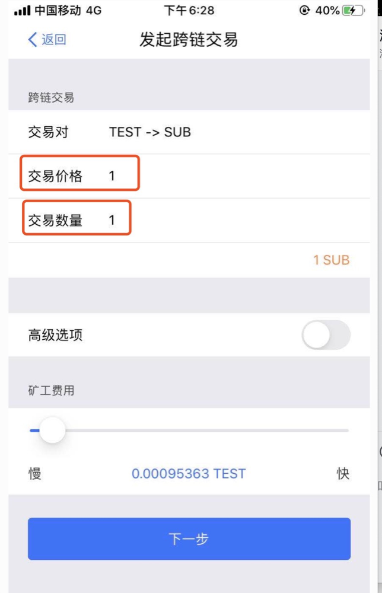
点击“下一步”，输入密码后点“确认”。
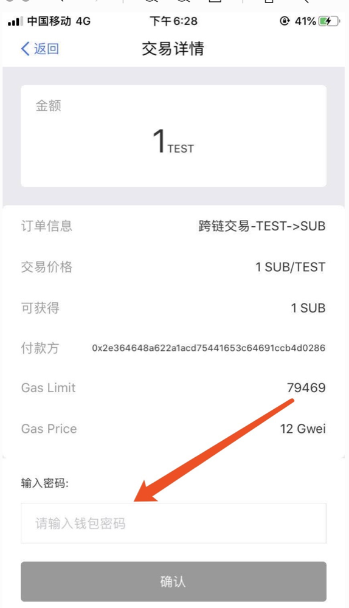
交易发送成功后，待交易确认后（约3分钟），我们可以发现在账号的当前委托页面新增了一条记录，此刻全网用户均可查询到该笔委托，说明发单成功。用户的TEST减少1个
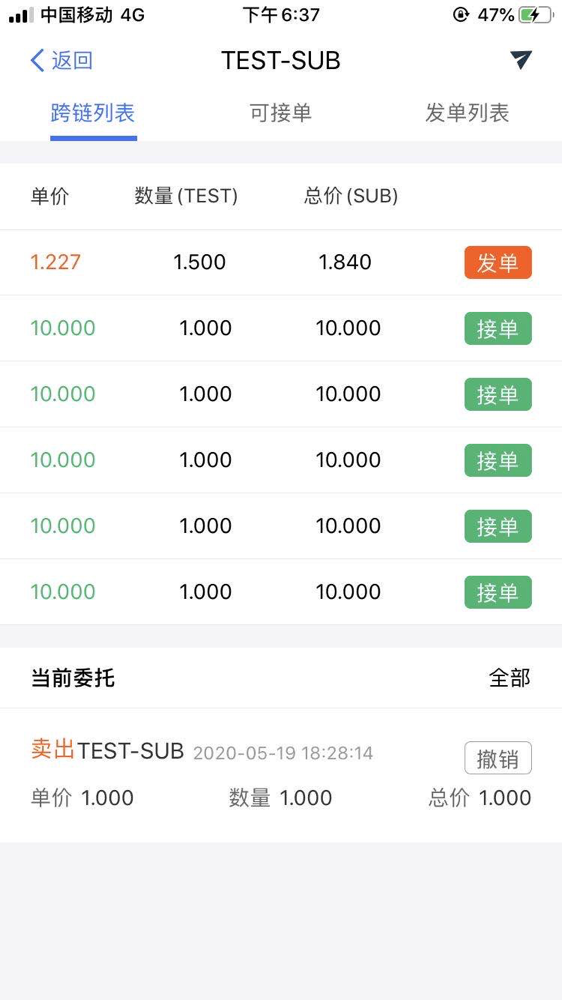
撤单
选择上面的委托记录，点击“撤单”，进入撤单流程。
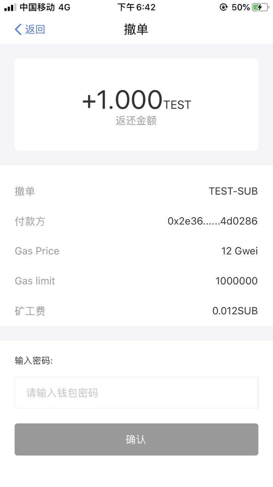
输入密码，点击“确认”，发送交易，待交易确认后（约6分钟）。用户委托列表空了，历史记录中新增了一条撤单记录。

回到首页，刚刚减少的TEST也回来了。